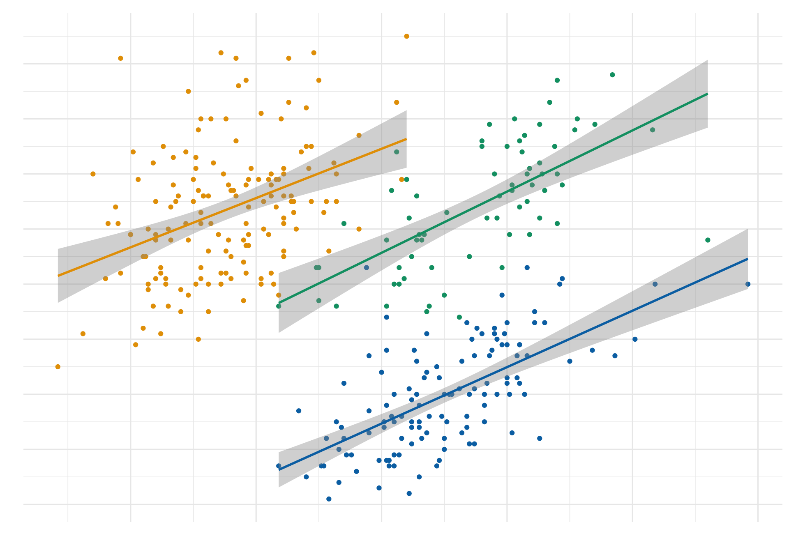

Code
install.packages("palmerpenguins") #Data
install.packages("tibble") #Data handling
install.packges("ggplot2") #Plotting
install.packages("dplyr")Simpson’s Paradox bezeichnet ein statistische Phänomen, in dem die Daten eine hierarchisch angeordnete Struktur aufweisen. Die Analyse der Daten kann deshalb auf unterschiedliche Ebenen dieser Sturktur gemacht werden und Einfluss auf das Resultat haben. Teilweise kann wird dadurch die Interpretation der Forschungsfrage beeinflusst je nach untersuchten Ebenen. Simpson’s Paradox wird oft verwendet um die Vorteile von Linear Mixed Effects Model im Vergleich zur einfacher linearen Regression darzustellen.
Beispiele sind:
Beispiele sind:
Daten (Gorman (2014)):
Die Daten wurden von Dr Allison Horst, Alison Hill und Kristen Gorman zu einem R Packet palmerpenguins verarbeitet. Das folgende Projekt basiert auf dem Turtorial von Silvia Canelon.
Zuerst, R Packete installieren
install.packages("palmerpenguins") #Data
install.packages("tibble") #Data handling
install.packges("ggplot2") #Plotting
install.packages("dplyr")Packete laden
library(palmerpenguins)
library(tibble)
library(ggplot2)
library(dplyr)
penguins <- palmerpenguins::penguins
head(penguins)# A tibble: 6 × 8
species island bill_length_mm bill_depth_mm flipper_length_mm body_mass_g
<fct> <fct> <dbl> <dbl> <int> <int>
1 Adelie Torgersen 39.1 18.7 181 3750
2 Adelie Torgersen 39.5 17.4 186 3800
3 Adelie Torgersen 40.3 18 195 3250
4 Adelie Torgersen NA NA NA NA
5 Adelie Torgersen 36.7 19.3 193 3450
6 Adelie Torgersen 39.3 20.6 190 3650
# ℹ 2 more variables: sex <fct>, year <int>ggplot(data = penguins,
aes(x = sex, y = body_mass_g))+
geom_boxplot(aes(fill = species))Die Boxplotte deuten darauf hin, dass bei Gentoo ein geschlechtsspezifischer Unterschiedlich im Body Mass zu sehen ist, wobei dies möglicherweise nicht der Fall ist bei Adelie und Chinstrap.
penguins %>%
select(species, sex, body_mass_g) %>%
arrange(desc(body_mass_g))# A tibble: 344 × 3
species sex body_mass_g
<fct> <fct> <int>
1 Gentoo male 6300
2 Gentoo male 6050
3 Gentoo male 6000
4 Gentoo male 6000
5 Gentoo male 5950
6 Gentoo male 5950
7 Gentoo male 5850
8 Gentoo male 5850
9 Gentoo male 5850
10 Gentoo male 5800
# ℹ 334 more rowspenguins %>%
select(species, sex, body_mass_g) %>%
group_by(species,sex) %>%
summarize(mean = mean(body_mass_g))`summarise()` has grouped output by 'species'. You can override using the
`.groups` argument.# A tibble: 8 × 3
# Groups: species [3]
species sex mean
<fct> <fct> <dbl>
1 Adelie female 3369.
2 Adelie male 4043.
3 Adelie <NA> NA
4 Chinstrap female 3527.
5 Chinstrap male 3939.
6 Gentoo female 4680.
7 Gentoo male 5485.
8 Gentoo <NA> NA penguins %>%
group_by(species) %>%
mutate(n_species = n()) %>%
ungroup() %>%
group_by(species,sex,n_species) %>%
summarize(n=n())`summarise()` has grouped output by 'species', 'sex'. You can override using
the `.groups` argument.# A tibble: 8 × 4
# Groups: species, sex [8]
species sex n_species n
<fct> <fct> <int> <int>
1 Adelie female 152 73
2 Adelie male 152 73
3 Adelie <NA> 152 6
4 Chinstrap female 68 34
5 Chinstrap male 68 34
6 Gentoo female 124 58
7 Gentoo male 124 61
8 Gentoo <NA> 124 5penguins %>%
count(species, sex) %>%
add_count(species, wt = n,
name = "n_species")# A tibble: 8 × 4
species sex n n_species
<fct> <fct> <int> <int>
1 Adelie female 73 152
2 Adelie male 73 152
3 Adelie <NA> 6 152
4 Chinstrap female 34 68
5 Chinstrap male 34 68
6 Gentoo female 58 124
7 Gentoo male 61 124
8 Gentoo <NA> 5 124penguins %>%
count(species, sex) %>%
add_count(species, wt = n,
name = "n_species") %>%
mutate(prop = n/n_species*100)# A tibble: 8 × 5
species sex n n_species prop
<fct> <fct> <int> <int> <dbl>
1 Adelie female 73 152 48.0
2 Adelie male 73 152 48.0
3 Adelie <NA> 6 152 3.95
4 Chinstrap female 34 68 50
5 Chinstrap male 34 68 50
6 Gentoo female 58 124 46.8
7 Gentoo male 61 124 49.2
8 Gentoo <NA> 5 124 4.03penguins %>%
count(species, sex) %>%
add_count(species, wt = n,
name = "n_species") %>%
mutate(prop = n/n_species*100) %>%
filter(species == "Chinstrap")# A tibble: 2 × 5
species sex n n_species prop
<fct> <fct> <int> <int> <dbl>
1 Chinstrap female 34 68 50
2 Chinstrap male 34 68 50penguins_new <-
penguins %>%
mutate(year_factor = factor(year, levels = unique(year)))
penguins_new# A tibble: 344 × 9
species island bill_length_mm bill_depth_mm flipper_length_mm body_mass_g
<fct> <fct> <dbl> <dbl> <int> <int>
1 Adelie Torgersen 39.1 18.7 181 3750
2 Adelie Torgersen 39.5 17.4 186 3800
3 Adelie Torgersen 40.3 18 195 3250
4 Adelie Torgersen NA NA NA NA
5 Adelie Torgersen 36.7 19.3 193 3450
6 Adelie Torgersen 39.3 20.6 190 3650
7 Adelie Torgersen 38.9 17.8 181 3625
8 Adelie Torgersen 39.2 19.6 195 4675
9 Adelie Torgersen 34.1 18.1 193 3475
10 Adelie Torgersen 42 20.2 190 4250
# ℹ 334 more rows
# ℹ 3 more variables: sex <fct>, year <int>, year_factor <fct>ggplot(data = penguins,
mapping = aes(x = bill_length_mm, y = bill_depth_mm))+
geom_point() +
geom_smooth(method='lm', formula = y ~x)
plot_simps <- penguins %>%
ggplot(mapping = aes(x = bill_length_mm, y = bill_depth_mm, group = species, col = species)) +
geom_point() +
geom_smooth(method = 'lm', formula = y ~x)
plot_simps
Wir sehen auf den letzten beiden Plots, dass wenn wir die Art der Penguine ingnorieren wir falsche Schlüsse ziehen über den Zusammenhang zwischen Schnabellänge und -breite.
More information on mixed-effects models and simpson’s paradox (see Hox, Moerbeek, and Van de Schoot 2017)
library(thematic)
library(ggtext)
colors <- thematic::okabe_ito(3)
title_text <- glue::glue(
'Bill Depth per Bill Length in mm for <span style = "color:{colors[1]}">**Adelie**</span>, <span style = "color:{colors[2]}">**Chinstrap**</span>, <span style = "color:{colors[3]}">**Gentoo**</span>')
plot_simps <- plot_simps +
labs(x = "Bill Lenght [mm]", y = "Bill Depth [mm]",
color = "Species",
title = title_text,
caption = "Source: Penguins Data") +
scale_y_continuous(
breaks = 13:22
)+
scale_x_continuous(
breaks = seq(30,60,by = 5)
)+
#guide = none, legend wird ausgelassen
scale_color_manual(values = thematic::okabe_ito(3), guide = "none") +
theme_minimal(base_family = 'Source Sans Pro', base_size = 12)+
theme(plot.title = ggtext::element_markdown(color = 'grey20', size = rel(1.7),face= "bold"),
plot.title.position = "plot",
# Bold axis titles
axis.title = element_text(face = "bold"),
# Add some space above the x-axis title and make it left-aligned
axis.title.x = element_text(margin = margin(t = 10), hjust = 0),
# Add some space to the right of the y-axis title and make it top-aligned
axis.title.y = element_text(margin = margin(r = 10), hjust = 1, margin (0,4,0,0)),)
plot_simps
library(here)here() starts at /Users/oliverzingg/Portfoliop <- here("my_plot.png")
#ggsave(p,plot_simps, width=45, height=30, units = "cm", dpi=500)